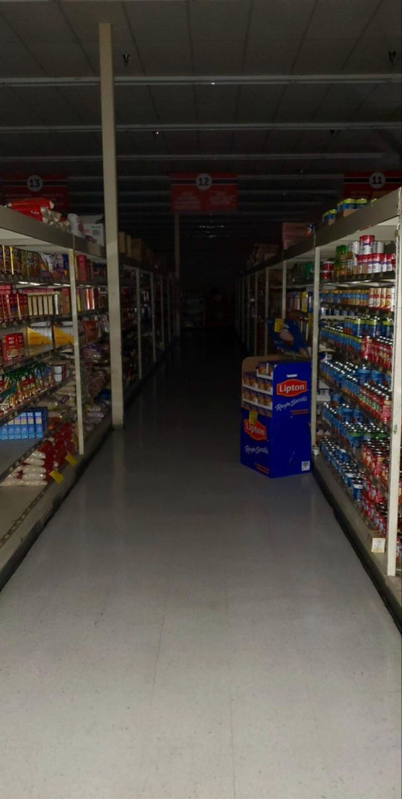

You decide to stay- after all, it's just a store. It wouldn't be
open if it was a threat, right?
You walk through the isles, grabbing things you think you need.
The smell of mildew is starting to overpower the cold smell of
the fridges and cardboard boxes. The lights flicker like they havent
seen help in decades. What's coming out of the walls? Why would they
let this store go like this?

-or do you-